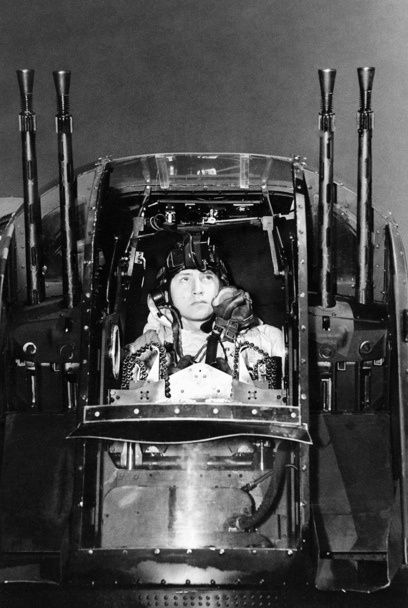
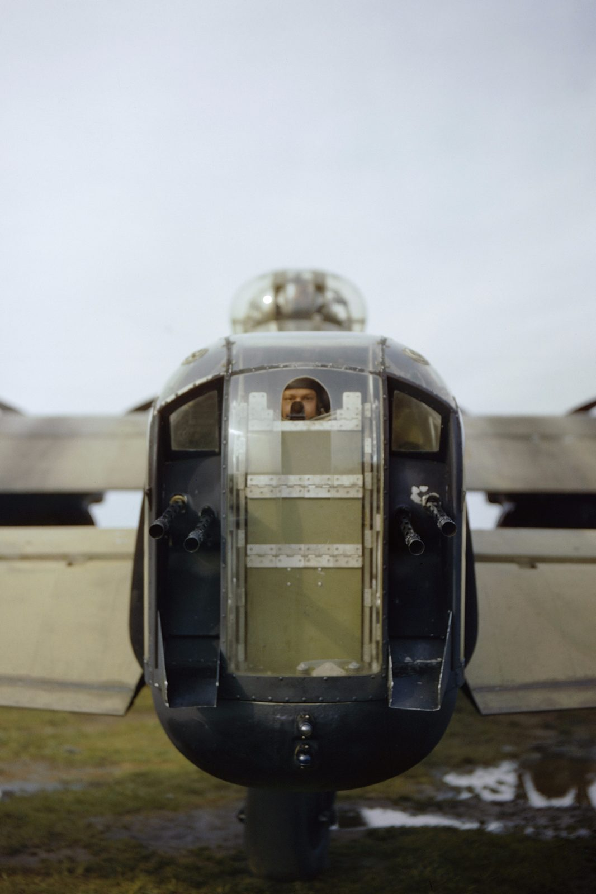
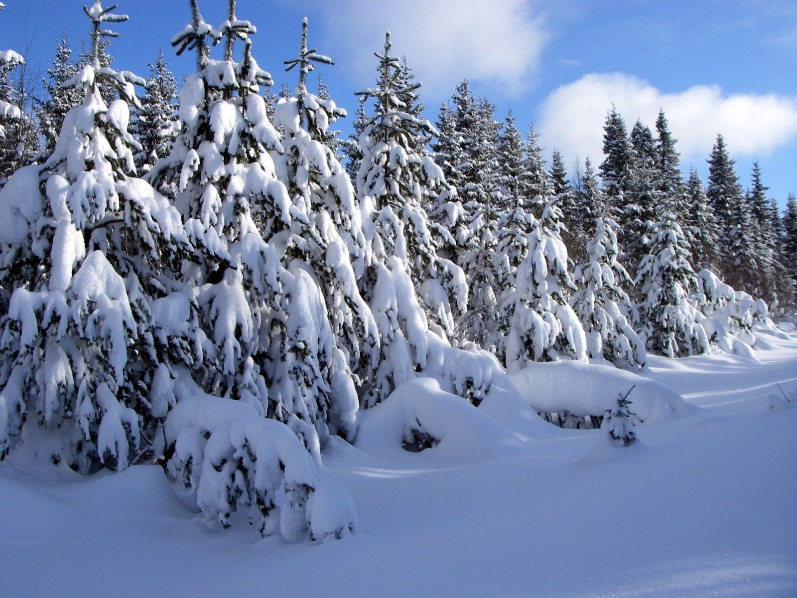
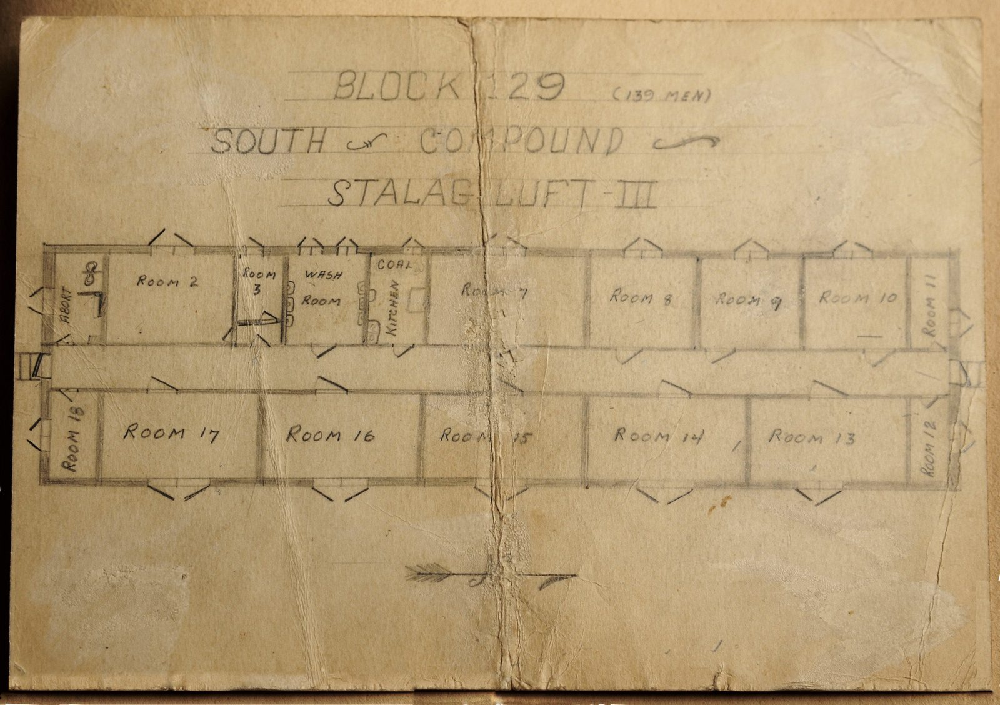

On a black, freezing night over Germany, a burning Lancaster gave a 21-year-old tail gunner two ways to die. He jumped anyway (no parachute, four miles of empty air between him and the ground) and somehow, he survived it. This is the full, source-verified account of Flight Sergeant Nicholas Alkemade.
The night of 24/25 March 1944 was the last major raid of the Battle of Berlin, and one of the costliest nights RAF Bomber Command ever flew.

Nicholas Stephen Alkemade was 21 years old, a former market gardener from Loughborough, flying as rear gunner, “tail-end Charlie” in RAF slang, aboard Avro Lancaster B Mk II serial DS664, coded A4-K and christened Werewolf by her seven-man crew. They flew with No. 115 Squadron RAF out of RAF Witchford, Cambridgeshire. It was their fifteenth operation together. The other fourteen had brought them home.
The rear turret was the loneliest posting on the aircraft: a cramped perspex bubble at the very back of the fuselage, exposed to cold that could drop past -40°C, with no parachute worn inside it because there simply wasn't room. A gunner's chute was stowed just forward of the turret, within reach in theory, useless if the fire ever got there first.
That night, 811 aircraft of Bomber Command were sent to Berlin. An unforecast, ferociously strong north wind caught the bomber stream almost as soon as it crossed into Germany, scattering it far south of its planned track. Target markers went down in the wrong places; 126 towns and villages that were never meant to see a single bomb that night were hit by crews who had no idea how far off course the wind had pushed them. It became the last big raid of the entire Battle of Berlin, and, on the long, exposed run home across some of the most heavily defended airspace in Europe, one of the worst nights of Bomber Command's war. Seventy-two aircraft did not return: 8.9 percent of the force, gone in a single night.
Werewolf was one of them. On the return leg, east of the town of Schmallenberg, a Luftwaffe night fighter found her: a Junkers Ju 88 flown by Oberleutnant Heinz Rökker of 1./NJG 2, already an experienced night-fighter pilot who would finish the war with 64 confirmed victories and the Knight's Cross. Cannon fire raked the Lancaster. Fire took hold almost immediately, and within moments the aircraft was spiraling, out of control, burning.
Four men did not come home. This is also their story.
The aircraft was no longer flying. It was falling, on fire, and Alkemade had two ways out, neither of them good.
With the Lancaster spinning and the fuselage filling with smoke, Alkemade left the tail turret and went for his parachute, and found it already burning, the silk mostly gone. His flying suit was starting to catch too; by his own account, his face and hands were already burned, though in the moment he says he barely felt it. He had, in effect, no parachute and no working way to reach the ground alive by any conventional means.
What remained was a straight choice: stay with a burning aircraft that was going to hit the ground regardless, or go out through the escape hatch into 18,000 feet of black, freezing air with nothing to slow him down. He chose to jump.
I had the choice of staying with the aircraft or jumping out. If I stayed I would be burned to death — my clothes were already well alight and my face and hands burnt, though at the time I scarcely noticed the pain owing to my high state of excitement… I decided to jump and end it all as quick and clean as I could.
— Nicholas Alkemade, his own account, later recorded by the RAF MuseumThere was no real time to weigh it twice. He climbed out through the aircraft's escape hatch and let go, choosing what he expected to be a fast death over a slow one: not a rescue, not a plan, just the only decision that gave him any control at all over how it ended.
Free of the aircraft, Alkemade fell roughly 18,000 feet (about 5,500 meters, or more than three miles) through open, moonless sky.

By his own later account, he had a few clear seconds after leaving the aircraft: he saw the burning Lancaster falling away above him against the stars, and then, nothing. He blacked out during the descent, whether from the cold, the tumbling, the thinning air, or simple shock, and by most tellings never regained consciousness before he hit the ground.
Nobody timed the fall, and no instrument recorded it. Based on the physics of a falling body (several seconds to accelerate, then somewhere around 120 mph at terminal velocity), the descent from 18,000 feet likely took somewhere in the region of ninety seconds to two minutes. Alkemade himself couldn't say. He had no memory of most of it, which, if the accounts of what came next are right, may have been the only mercy available to him: an unconscious body falls loose and relaxed, not braced and rigid, and that difference can be the one that decides whether a landing like this is even survivable at all.
Somewhere over the German countryside, three miles of empty air ran out, and Alkemade landed in exactly the one place that could have kept him alive.
He came down in a small wood of pine trees, their branches slowing him further as he broke through, before he finally struck ground already cushioned by roughly eighteen inches of soft, fresh snow. It was, by any reasonable measure, an almost impossible combination of circumstances: the kind of soft-landing chain investigators and physicists still point to whenever this case comes up as an example of how survivable an unsurvivable fall can be, given exactly the wrong (or right) conditions all lining up at once.
When he came to, Alkemade was lying in the snow, badly shaken and singed, but essentially whole. Investigators and later accounts consistently describe the same short list of injuries: a sprained or twisted knee, some bruising, minor burns to his face and hands from the fire in the aircraft, and nothing broken. No fractures. No internal injuries anyone ever recorded. He had fallen more than three miles without a parachute and gotten up. Nearly thirty years later Juliane Koepcke would survive a comparable fall, still strapped into her seat row.

Of everything that happened that night, this is the detail that has kept the story alive for eighty years.
Alkemade did not scream, did not panic, and by every account did not go looking for help in the dark. He checked himself over, found his cigarette case still in his pocket, and lit one. Then he waited, calmly, by his own later description, for someone to come and find him, because there was very little else a man with a sprained leg, alone in a snow-covered German forest in the middle of the night, could usefully do.
It's a small, almost absurd gesture set against everything that had just happened to him: falling three miles, watching his own aircraft burn away above him, waking up alive against every likelihood. But it's also exactly the note his whole life ran on. Alkemade was, by every surviving account, a matter-of-fact man before the war, during it, and for the four decades he lived after it. He didn't treat what happened to him as a miracle to perform. He treated it as something that had happened, was now over, and could be smoked through until the next thing happened.
He used the last item first.
When German troops found him, they didn't believe a word of his story, and given what he was claiming, it's hard to blame them.
Alkemade was taken into custody and questioned, first by regular troops and then by more hostile interrogators, who assumed his account of falling 18,000 feet without a parachute was a cover story, most likely for something they considered far more serious: that he had hidden or ditched a working parachute and was, in reality, a spy who had been deliberately dropped rather than a downed airman who had jumped in desperation. He was held and questioned under suspicion, at least briefly in solitary confinement, while his story was checked.
It didn't take long for the checking to work in his favor. German investigators went to the wreckage of Werewolf and the site where he said he had landed. They found his flying harness still fitted with the cotton retaining loops that would have held a parachute pack in place, undisturbed, exactly as a man who had never had a chance to clip one on would leave them. In the burned-out fuselage, they found the remains of his actual parachute, the canopy destroyed by fire precisely where he'd said it had been stowed. The pine trees and the depth of snow at the landing site matched what he described. There was no second parachute anywhere, hidden or otherwise. Every physical detail lined up with a story that, on its face, sounded impossible.
He was still wearing his harness, and the cotton loops that restrained the straps from accidental deployment were still in place — and the metal parts of his chute were exactly where he said it had burned in the aircraft.
— German investigation of the crash site, as recorded in squadron history accountsThe story didn't stay contained. It's one thing for an enemy to privately conclude a prisoner is telling the truth. It's another for that enemy to make sure the truth gets written down and witnessed, which is, in essence, what happened next.
Once the crash site had been checked and Alkemade's account confirmed, a German Luftwaffe officer arranged for his story to be told to roughly 200 fellow Allied prisoners gathered at Stalag Luft III, the camp where Alkemade himself would soon be held. It's worth being precise about what happened next, because the popular version of this story, that his German captors themselves signed a certificate attesting to his fall, overstates it slightly. What actually survives is a certificate dated 25 April 1944, produced at the camp and formally witnessed and signed not by Germans, but by three fellow British officers among the prisoners: F/L H. J. Moore, F/S R. R. Lambe and F/S T. A. Jones.
The more remarkable part is why that document exists at all. It was the Luftwaffe's own officer who stood in front of two hundred Allied airmen and vouched, on the record, that an RAF sergeant they had shot down had fallen three miles without a parachute and lived, astonishing enough, to the very people who had shot him down and interrogated him as a suspected spy, that they made sure it was put in writing and witnessed rather than left as a rumor. Even the enemy wanted this one on the record.
This is to certify that the bearer of this certificate, Sgt. N. S. Alkemade, RAF, made a descent from 18,000 feet without a parachute, and made a safe landing, without injury, on the night of 24th/25th March, 1944.
Alkemade spent the rest of the war as a prisoner, came home, and lived the next four decades like a man who had already had his one extraordinary thing happen to him.
He was held at Stalag Luft III, the camp in occupied Poland made famous by the mass breakout later dramatized as The Great Escape, a breakout that happened, by coincidence, on the very same night Alkemade fell from the sky, 24/25 March 1944, though he wasn't yet a prisoner there when it happened. He remained a POW until the camp was evacuated and he was eventually repatriated to Britain in May 1945.
Back in Loughborough, he went to work at a chemical plant, an occupation that, almost fittingly, for a man who had already survived one thing that should have killed him, very nearly killed him more than once more in industrial accidents over the years. He later became a furniture salesman. He married a woman named Pearl. He gave interviews occasionally when asked, appeared on British television programs including the BBC's I've Got A Secret in December 1984, and by every account treated the most extraordinary night of his life as a fact about himself rather than a story to perform.

Nicholas Alkemade died on 22 June 1987, aged 64. In January 2020, No. 115 Squadron RAF, his old squadron, still serving today at RAF Wittering, voted to name a building after him: The Alkemade Building. It's a small, permanent way of keeping a matter-of-fact man's name attached to the one night nobody who has ever heard the story quite forgets.
Every fact in this case file was cross-referenced against at least two independent sources. Where accounts genuinely disagreed, we've said so rather than picked silently. All links open in a new tab.
The Royal Air Force Museum's own account of Alkemade's service, the jump, his own quoted words, and his post-war life.
Used as a secondary cross-check against the RAF Museum and squadron-history accounts, per Flight Crew Files' sourcing standards.
A detailed, dated squadron-history account, including the certificate's circumstances, crew fates and Stalag Luft III details.
A researcher-maintained archive thread quoting the certificate's signatories and wreckage-inspection details from squadron records.
Community local-history account focused on Alkemade's Loughborough roots and post-war life.
Independent verification of the 24/25 March 1944 raid's scale, the unforecast winds, and Bomber Command's losses that night.
Background on the night-fighter pilot credited with shooting down DS664, cross-referenced against squadron accounts.